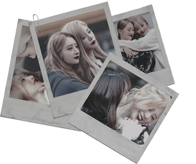

—Todo el mundo en el edificio habla de ti y de esa cría de Conan.
Su voz ligera consigue enfurecer a Terry, pero una parte de sí no termina de prestarle atención. A fin de cuentas, ha conseguido sortear el bache antes. Su atención va más allá de su familia, porque Erik añade unas nuevas palabras:
«Todo el mundo en el edificio habla de ti y de Audrey».
Los ojos de Erik la atrapan de inmediato, porque en su voz hay una calma anormal, pero en el iris del chico refulgen los celos. Una ira enfermiza que se derrama hasta la boca.
La expresión de la actriz es de sorpresa e incredulidad. Cada vez que quería olvidarla, allí estaba una vez más, en sus sueños, en las pesadillas o en los recuerdos que la asaltaban para quedar adheridos en una parte de su mente: ella riendo, ella en la noche neoyorkina, ella bajo sus manos. Intenta centrarse, pero no entiende por qué Erik, que siempre parece querer desentenderse de todo, le habla de esto.
—¿Y qué?
—Pues que está mal. —Erik se mueve y parece dejarse alimentar por una rabia, cálida y agradable, que llevaba esperando bajar a su estómago,
atascada en su garganta desde hace tiempo— Es enfermizo. Y la forma en la que la miras... No puedes engañarme.
—La sonrisa le serpentea por la boca, cínica y helada— No puedes hacerle esto a tus fans...
Terry traga saliva.
—No sé de qué estás hablando.
—¿De veras? Porque eso no es lo que he descubierto.
—Erik hunde la mano en su bolsillo para sacar unas cuantas fotografías que le arroja—
En la plataforma Severance hay gente muy aplicada y con muchos recursos, ¿sabes?
Todos queremos saber si aquello por lo que pagamos es bueno.

Terry toma las fotografías entre sus manos. Verse junto a Audrey en ellas solo dispara la alarma. Con los ojos desorbitados y la respiración afectada, le suelta a Erik:
—¿Esto de qué coño va? ¿Quién eres, enfermo de mierda?
—No hace falta ponerse nerviosa, Terry.